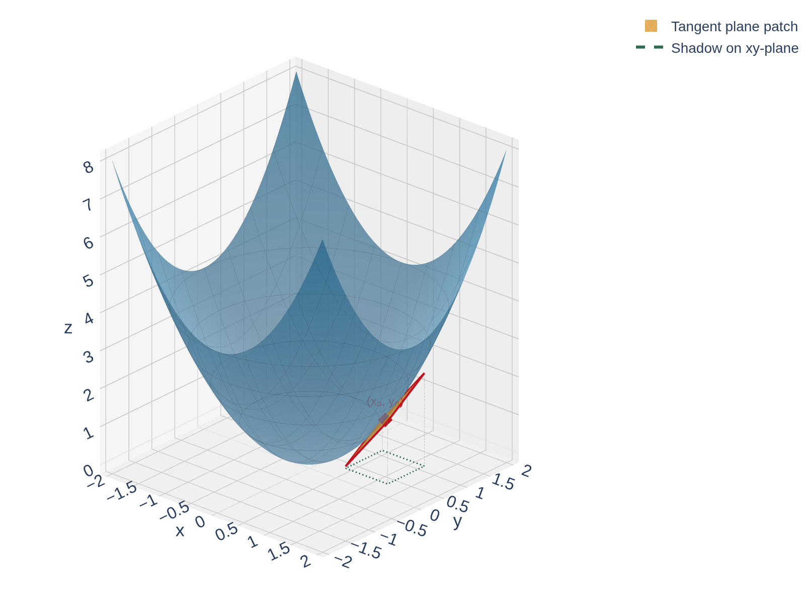
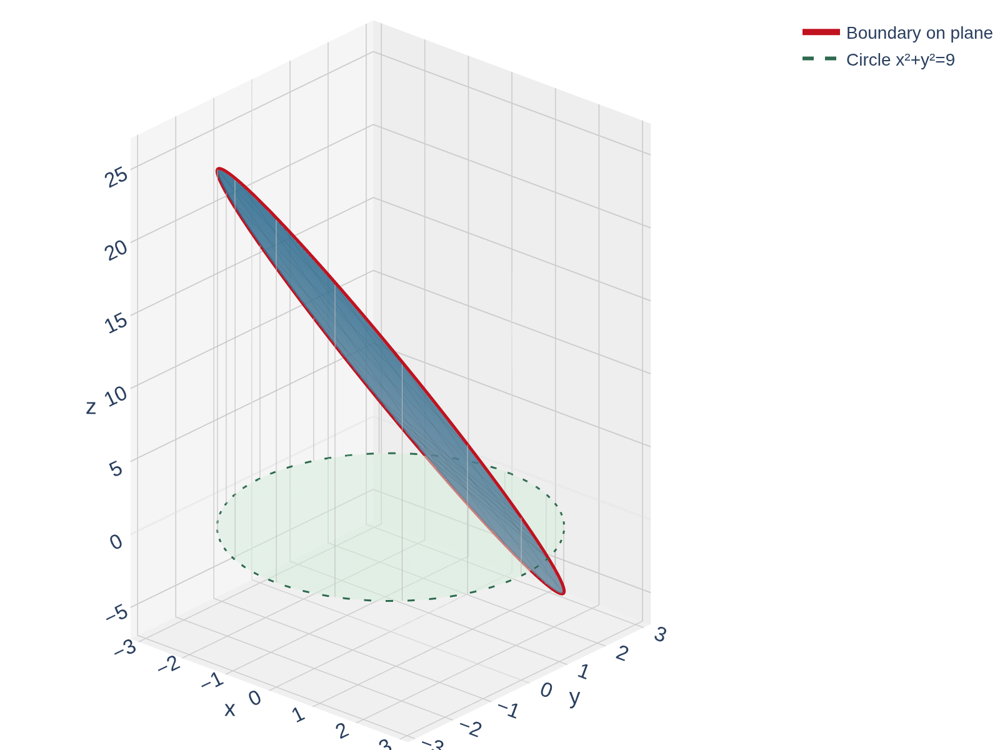

Section 15.5: Surface Area
Multiple Integrals
MTH 310
Calculus III
Why Surface Area Isn't Just \(\iint 1\, dA\)
Approximating Surface Area with Tangent Plane Patches

The Surface Area Formula
Surface Area
The area of the surface \(z = f(x,y)\) over a region \(D\), where \(f_x\) and \(f_y\) are continuous, is
\[A(S) = \iint_D \sqrt{\left[f_x(x,y)\right]^2 + \left[f_y(x,y)\right]^2 + 1} \, dA\]
Quick Check: Surface Area of a Flat Surface
Compute \(f_x\) and \(f_y\) for \(f(x,y) = 3\). Plug into the surface area formula. What does the integral simplify to?
Example 1: Plane Inside a Cylinder
Example 1
Find the surface area of the part of the plane \(2x + 5y + z = 10\) that lies inside the cylinder \(x^2 + y^2 = 9\).

Solve for \(z = f(x,y)\), compute the partials, and set up the integral over the disk.
Example 2: Area of a Spherical Cap
Example 2
Find the surface area of the part of the sphere \(x^2 + y^2 + z^2 = 4\) that lies above the plane \(z = 1\).

Solve for \(z\), find \(f_x\) and \(f_y\), simplify the integrand, then switch to polar.
Quick Check: Set Up a Surface Area Integral
Compute \(f_x\) and \(f_y\), form the integrand, then convert to polar.
Example 3: Why \(A(\text{sphere}) = 4\pi a^2\)
Example 3
Prove that the surface area of a sphere of radius \(a\) is \(4\pi a^2\).
Set up the integrand for \(z = \sqrt{a^2 - x^2 - y^2}\) over the disk \(x^2 + y^2 \leq a^2\). Where does the integrand have trouble?
Homework
Section 15.5: 1, 3, 9, 11, 13, 23